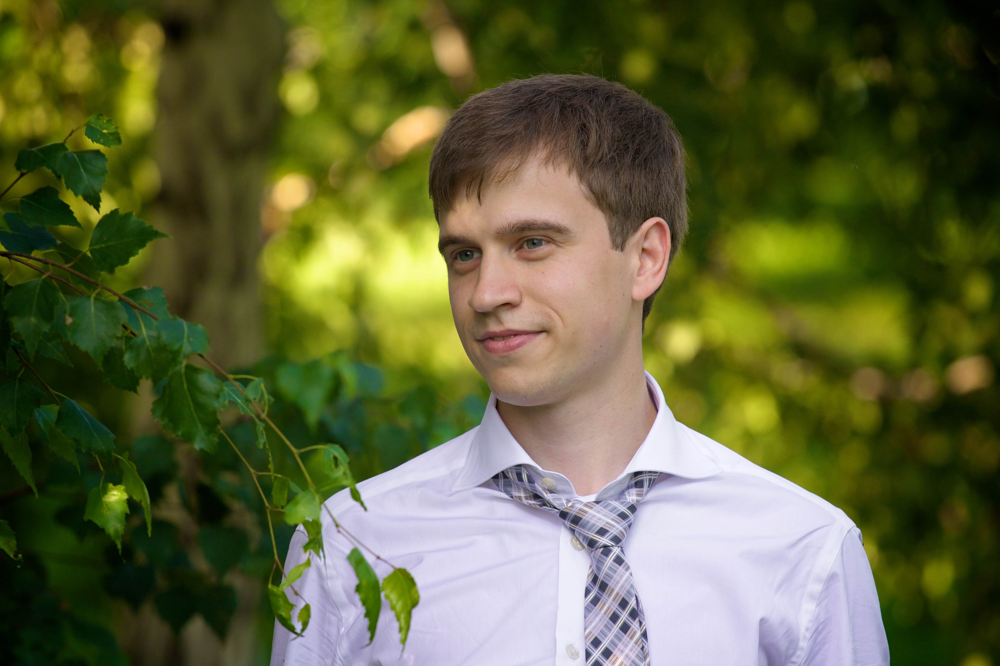

Yuriy Kashnikov
Yuriy Kashnikov
Université de Versailles Saint-Quentin-en-Yvelines
45 avenue des Etats-Unis
78035 Versailles
Phone: + 33 68 431 25 20
Email: yuriy dot kashnikov at gmail dot com
ABOUT ME
I am a Computer Science PhD student at UVSQ working on application characterization with Dr. Grigori Fursin and Prof. William Jalby.
At the moment I am working on exahard problems at Exascale Computing Research Center.
I've spent a few wonderful years at the Novosibirsk State University and defended a thesis "Applying Garbage Collection Algorithms To Reduce The Data Access Time".
For my thesis work (but not only) I've contributed some code to Apache Harmony.
Here you can find my CV: PDF
RESEARCH INTERESTS
- Compilers, optimizations, adaptive libraries
- Statistical analysis, machine learning, data mining
PUBLICATIONS
- Grigori Fursin, Yuriy Kashnikov, Abdul Wahid Memon, Zbigniew Chamski, Olivier Temam, Mircea Namolaru, Elad Yom-Tov, Bilha Mendelson, Ayal Zaks, Eric Courtois, Francois Bodin, Phil Barnard, Elton Ashton, Edwin Bonilla, John Thomson, Chris Williams, Michael O'Boyle. MILEPOST GCC: machine learning enabled self-tuning compiler.
International Journal of Parallel Programming (IJPP).
- Yuanjie Huang, Liang Peng, Chengyong Wu, Yuriy Kashnikov, Jörn Renneke, and Grigori Fursin. Transforming GCC into a research-friendly environment: plugins for optimization tuning and reordering, function cloning and program instrumentation.
2nd International Workshop on GCC Research Opportunities (GROW’10) co-located with HiPEAC'10, Pisa, Italy, January 2010 (acceptance rate: 57%, 8/14)